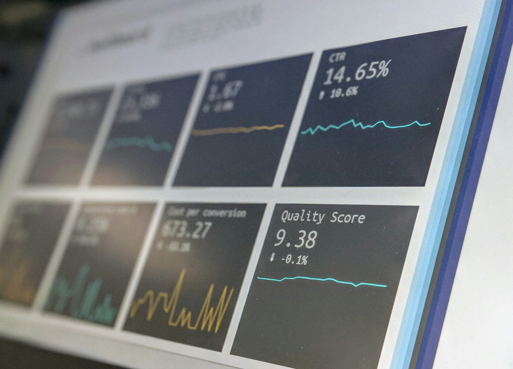

Hvað er erfitt í dag og hvað hefur verið reynt.
Taktu næsta skref
Bókaðu 30 mínútna fund um gæði, hraða og áhættu.
Við byrjum á stuttu samtali um raunverulegt afhendingarflæði hjá þínu fyrirtæki. Engin skuldbinding, engin sölusýning sem hentar öllum. Bara heiðarleg stöðumynd og tillaga að næsta skrefi.

Næsta skref
Fyrsti fundurinn á að finna raunhæfan fyrsta áfanga.
Við byrjum á einu raunverulegu afhendingarflæði, einni skýrri áhættu eða einu verkefni sem þarf meiri festu. Það gerir fundinn beittan og næstu skref gagnleg.
Hvaða bil í gæðum eða framkvæmd skiptir mestu.
Hvað er raunhæft að bæta fyrst.
Fundurinn
Hvað gerist í fyrsta samtali?
Við skiljum stöðuna
Hvaða kerfi, teymi, útgáfur og gæðavandamál eru mikilvægust núna?
Við finnum fyrstu áhættuna
Er vandinn hraði í þróun með gervigreind, handvirk prófun, óskýrar kröfur, útgáfuferli eða verkefnastjórnun?
Við leggjum til næsta áfanga
Þú færð skýra mynd af því hvar Kalvex myndi byrja og hvaða niðurstöðu fyrsti áfangi ætti að skila.
Gott að hafa með
Þú þarft ekki að undirbúa fullkomna kynningu.
Það hjálpar að hafa eina raunverulega sögu: útgáfu sem fór illa, handvirkt prófunarflæði sem tefur, gervigreindartól sem teymið er byrjað að nota, eða verkefni sem þarf meiri stjórn.
Við spyrjum yfirleitt um
- útgáfutíðni og hvar tafir myndast,
- núverandi próf og hvað er handvirkt,
- hvernig kröfur eru samþykktar,
- hvar gervigreind er notuð í þróun,
- hvaða ákvörðun stjórnendur þurfa að taka næst.
Úr vinnunni
Minna af hvítum pappír. Meira af kerfum sem sjást og virka.
Gæðavinna verður skiljanlegri þegar hún sést sem flæði: kóði, mælingar, innviðir, skipulag og útgáfuskilyrði sem styðja hvert annað.

